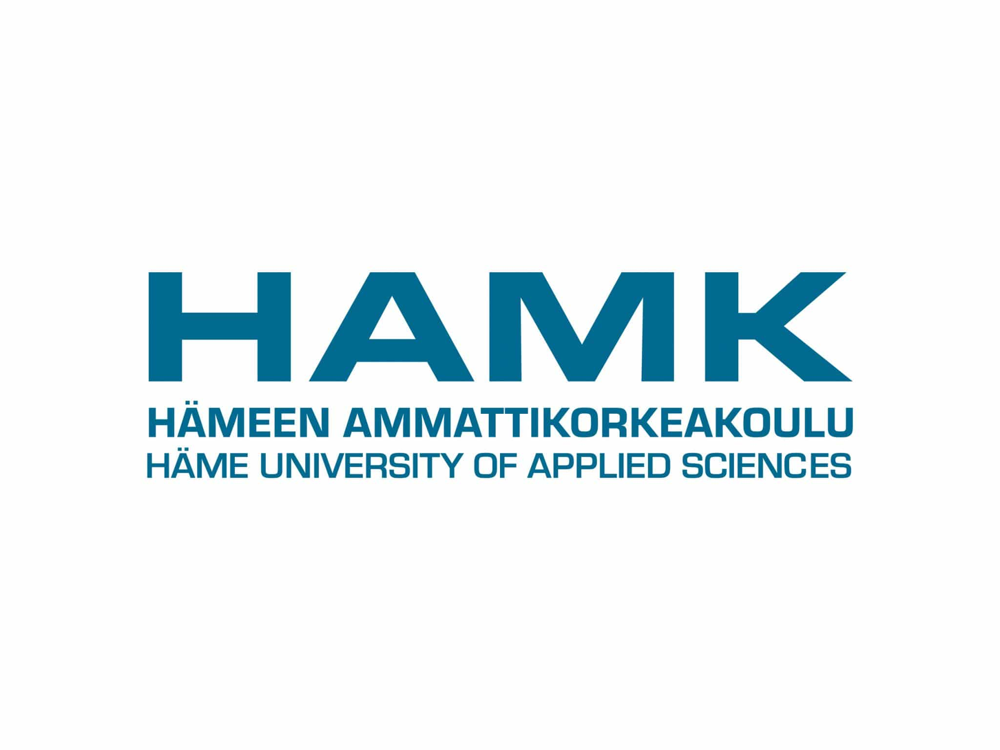

16.12.2022 13:40
Opiskelija ilmoittautuu joka lukuvuosi (1.8.-31.7. välinen aika) läsnäolevaksi tai poissaolevaksi. (Ilmoittautumisohje uudelle opiskelijalle on uuden opiskelijan sivulla.)
Kesken opintojen poissaolevaksi ilmoittautuvan opiskelijan tulee ottaa huomioon HAMKissa tapahtuvat opintojen tarjonnan vuosittaiset vaihtelut ja niiden mahdolliset vaikutukset henkilökohtaiseen opintosuunnitelmaan. Kaikki koulutukset eivät ala joka vuosi ja koulutuksia voidaan lakkauttaa.
Ensimmäisen lukuvuoden jälkeen opiskelija voi ilmoittautua poissaolevaksi enintään yhden lukuvuoden ajaksi. Poissaoloa ei tällöin lasketa opintojen enimmäisaikaan. Opintojen suorittamisaikaan ei lasketa myöskään opintojen aikaista poissaoloa, joka johtuu asevelvollisuuden, siviilipalveluksen tai naisten vapaaehtoisen asepalveluksen suorittamisesta tai äitiys-, isyys- tai vanhempainvapaasta (lakisääteiset syyt).
Poissaolevaksi ilmoittautunut opiskelija ei voi
Jos opiskelija on unohtanut ilmoittautua ilmoittautumisaikana, hän voi hakea opiskeluoikeuden palauttamista. Pyydä hakemus sähköpostilla osoitteesta opiskelijapalvelut@hamk.fi. Opiskeluoikeus voidaan palauttaa, jos sinulla on opiskeluoikeusaikaa jäljellä. Hakemuksen käsittelystä peritään 50 euron maksu.
Jatkava opiskelija ilmoittautuu Pakissa (opiskelijan työpöytä):
Huom! Jos olet ottanut opiskelupaikan vastaan 1.8.2015 jälkeen ja ilmoittaudut poissaolevaksi ensimmäisen lukuvuoden jälkeen joko armeijan, isyys/äitiys-, vanhempainvapaan vuoksi, toimita todistus poissaolosta opiskelijapalveluihin, ks. lisätietoja kohdasta poissaolo-oikeus.
Opiskelijan tulee ilmoittautua erikseen jokaiselle opinnolle, jonka haluaa suorittaa, esim. moduulin opintojaksoille. Opettaja ei voi antaa arvosanaa opiskelijalle, joka ei ole ilmoittautunut. Opiskelijat ilmoittautuvat opinnoille Pakin tai Tuudon kautta.